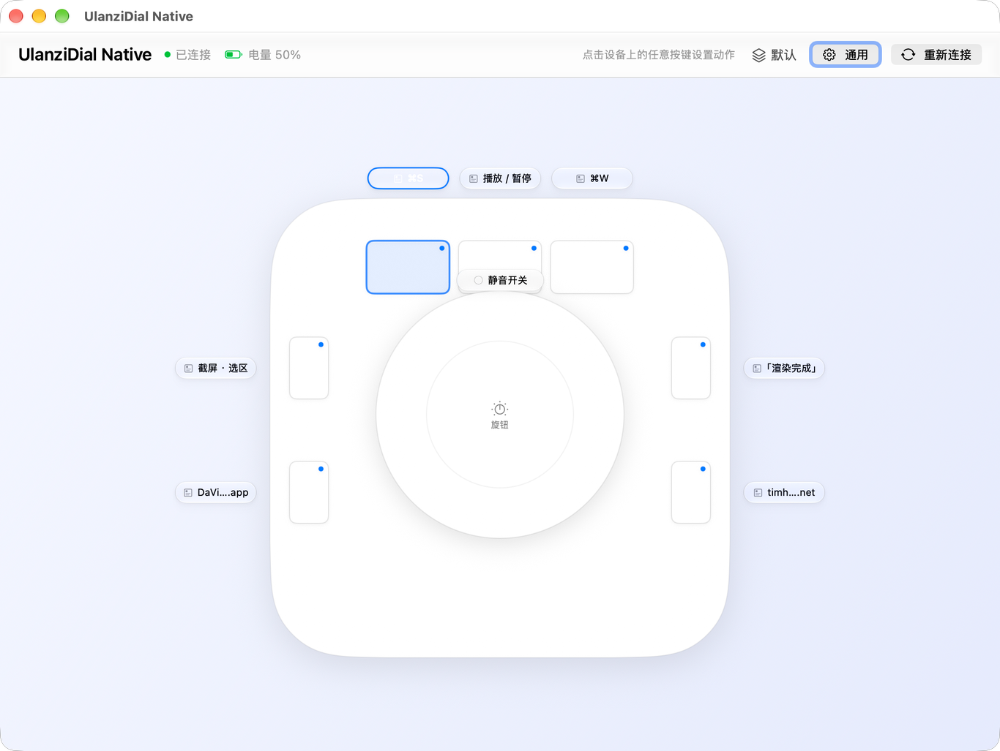

Ulanzi D100H 有 7 个键和一个旋钮。官方软件为了插件生态背了 Chromium、Node 和整套 Qt，
1 GB 包体、约 500 MB 内存。
这个项目只做你真正用的那一层：给 12 个可控位置各绑一个动作。
设备俯视图就是主界面：点哪个键，就地弹出那个键的编辑面板。

不做插件市场，不做灯光控制，只把「按键 → 动作」这件事做到干净、快、不占资源。
顶部三键、四个侧键、旋钮按下、旋钮顺/逆时针、按住旋钮顺/逆时针。每个位置单独绑定，互不干扰。
键盘快捷键（含被系统预留的 ⌥⌘Tab）、媒体键、输入文字、打开 App、打开网址或文件、运行命令、 系统操作、多项操作、无。
一个键可以按顺序执行多步动作，每步之间设等待毫秒数；也可以建多套映射， 并给指定 App 绑定规则——切到达芬奇自动换一套，切回浏览器自动换回来。
「顶部左键」
└ 多项操作
1. ⌘S 等 200 ms
2. 输入「渲染」 等 120 ms
3. ⌘↩ 完成不占 Dock，不占菜单栏。平时就是个后台进程，按 ⌥⌘D（可改）才弹出设置窗口，
关掉窗口继续在后台工作。开机自启走 Apple 官方 SMAppService。
⌥⌘D → 设置窗口
窗口关闭 → 后台继续工作
退出 → 菜单栏 / Dock 均无残留官方软件的资源占用不是功能需要的，是插件生态的代价——内嵌 Chromium 渲染插件面板，Node 跑插件逻辑。
| 项目 | Ulanzi Studio | UlanziDial Native |
|---|---|---|
| 包体 | 1.0 GB | 约 1 MB |
| 常驻内存 | 约 500 MB | 约 37 MB |
| 运行时 | Chromium + Node + Qt | 系统框架 |
| 界面 | 深色工程风 | 原生 macOS（液态玻璃） |
| 插件市场 / OBS / 灯控 | 有 | 没有（只做核心绑定） |
设备走 BLE 私有协议；社区已经完整逆向了它，并逐项验证过（测试固件 1.3.8.1）。
App 每秒发一次心跳，设备就进入「在线模式」：把原始按键事件加密上报，同时抑制固件自带的音量/媒体键行为。 停止心跳约 3 秒后，设备自动退回独立 HID 模式。
服务 0x1971
写入 fd01 ← 命令 / 心跳
通知 fd00 → 按键事件
加密 原始 TEA，32 轮
20 字节包，仅前 16 字节加密
事件 8b 10 <ID> <STATE>不依赖厂商那种不定期上报，直接读标准 GATT 电量特征（0x2A19）：连上就读一次，之后订阅变化。
模拟按键要通过 CGEvent 注入系统事件流；录制快捷键时还要用 CGEventTap
抓取被系统预留的组合（例如 ⌥⌘Tab），这两个 API 都要求辅助功能授权。
需要 macOS 13 及以上（液态玻璃效果需要 macOS 26）、Xcode 命令行工具。仓库不含预编译二进制。
git clone https://github.com/TimmySheep/ulanzidial-native.git
cd ulanzidial-native
./scripts/build.sh # 构建（有证书就签名，没有就 ad-hoc）
./scripts/install-local.sh # 构建 + 签名 + 装到 /Applications
./scripts/release.sh # 构建 + Developer ID 签名 + 公证首次运行需要授予：蓝牙（连接设备）与 辅助功能（模拟按键）。
先说限制，免得你踩坑。
不能。两者会争抢同一个 BLE 设备，必须二选一。
只在 D100H、固件 1.3.8.1 上验证过。协议对其他型号可能不同，未做适配。
那些是官方插件的功能，需要各自单独实现（OBS 要走 WebSocket，灯控是另一套 BLE 协议）。本项目只做核心绑定。
MIT。名称「Ulanzi」属于深圳优篮子科技，本项目仅在描述兼容硬件时使用。
不是。这是个人自用的非官方替代品，与 Ulanzi 无关，也不包含官方软件的任何资源。